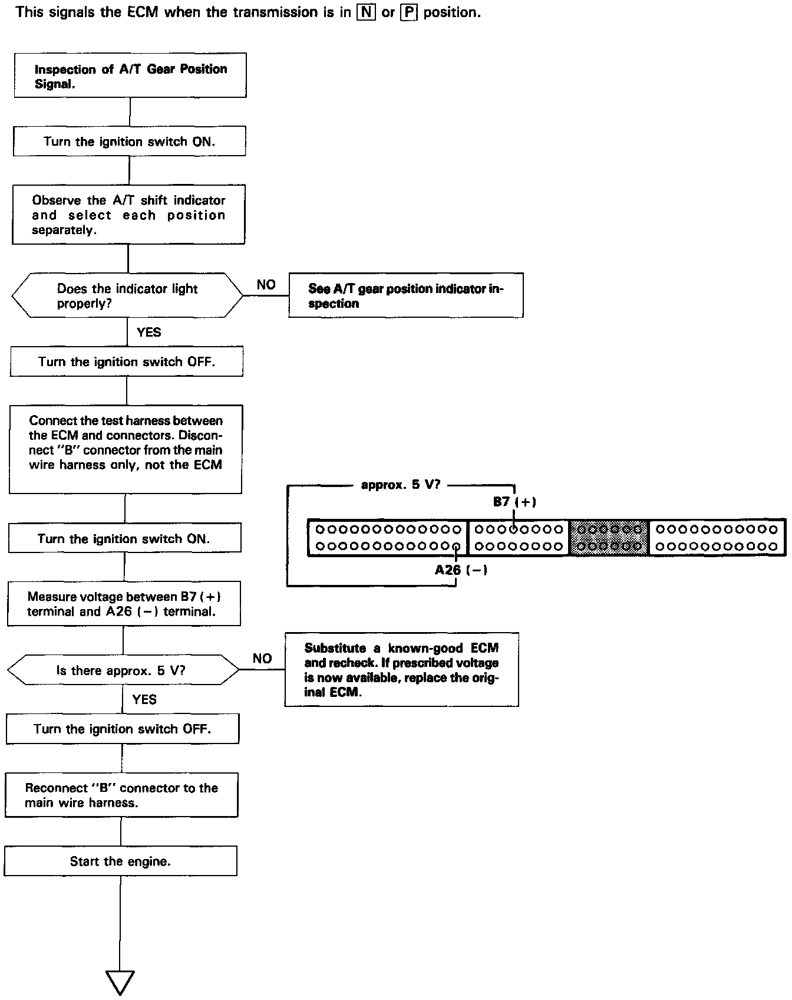
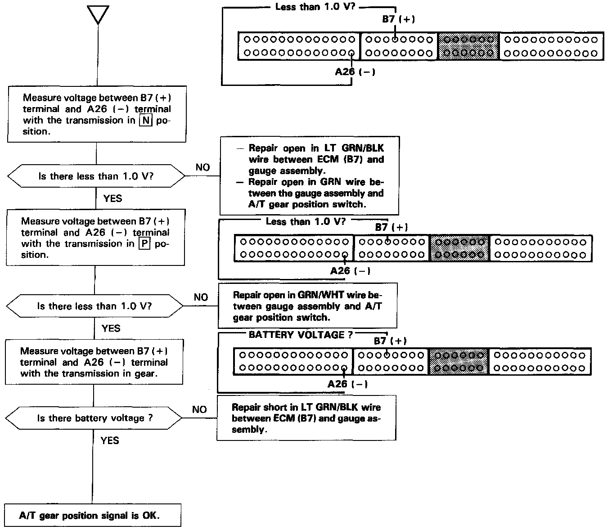

Operation CHARM
: Car repair manuals for everyone.
Home
>>
Acura
>>
1995
>>
Integra (GS-R) L4-1797cc 1.8L DOHC (VTEC)
>>
Repair and Diagnosis
>>
Powertrain Management
>>
Computers and Control Systems
>>
Testing and Inspection
>>
Component Tests and General Diagnostics
>>
Automatic Transaxle (A/T) Gear Position Signal
Automatic Transaxle (A/T) Gear Position Signal
A/T Gear Shift Position Signal (1 Of 2):

A/T Gear Position Signal (2 Of 2):
